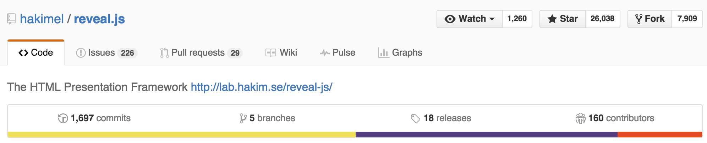

How to use github to evaluate developers
Who am I?
- Timo Rößner
- Berlin, Germany
- Director of Engineering @ Blacklane
- Part of the Reek and RubyCritic core team (hosted @ github)
So...github?
Who knows github?
Who works with github on a regular base?
You might stumble across github profiles on a lot of occasions
Linked in a candidates CV
Your contact in the dev team might say something "he looks really good on github!"
Friend-of-a-friend referrals from developer probably have some reference to github
Ok, so what's github?
github is a code hosting platform
Mostly known for open source software
Open source refers to something that can be modified and shared because its design is publicly accessible
Open source software is available for modification or enhancement by anyone
- Operating systems (Android, Linux)
- Programming languages (Ruby, Swift, Java)
- User applications (Firefox, OpenOffice)
github explained - repositories and users
Software resides in so called repositories
Which belongs to one user or organization
And can have an indefinite numbers of contributors and collaborateurs


github explained - discussing code
Users can contribute via issues
Think of issues as discussion items for
- bugs
- feedback
- suggestions

github explained - changing code
Users can suggest changes via pull requests
Think of pull requests as change request for
- fixing bugs
- adding new features
- changing features
TODO
developers love github because...
It allows them to work on interesting problems as a team

developers love github because...
It makes it easy to learn new languages and technologies

developers love github because...
They get recognition from their peers (e.g. via github stars)
developers love github because...
They love to chit chat about technology

So how can I find developers using github?
Well...you can't
github is not a recruiting platform
It doesn't offer any recruiting-related search functionality
But you can use it to evaluate developers!
Measure his activity
On his own projects
But also on other people's projects
In theory activity does not relate to quality at all but experience shows that in practice it often does

TODO - Get to know his interests
Public activity tells you a lot already
Projects he stars
His own pet projects
Check his social skills / cultural fit

A github workflow
There is no rule book for this
Everybody, including me, has their own workflow
Check out his profile
Check out his public activity
Check out his repositories

Recap
Developers love github
github will not help you to find developers
But it can help you to evaluate them
All github can give you are hints and clues. There are no golden rules
Thank you!
Questions?